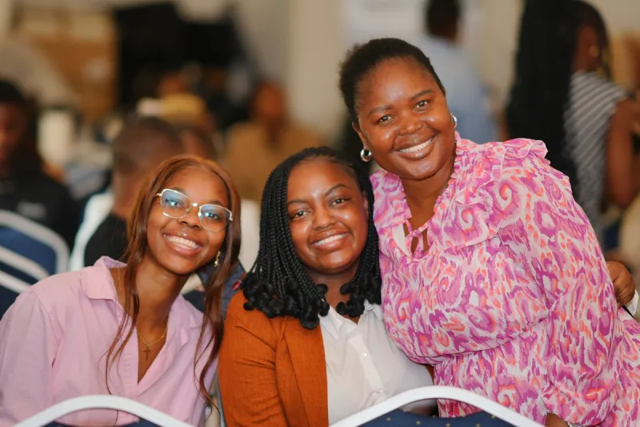

Serve, belong, grow
Departments are the teams that carry the life of the church week by week. Ministries gather people in the same season of life to grow together.
Departments
Six teams that keep the life of the church running.

Praise & Worship
[Sample] Leading the congregation into God's presence through music and song.
Learn more →Sound & Media
[Sample] Sound, livestream and visuals, so every word is heard clearly.
Learn more →
Intercessors
[Sample] Standing in prayer for the church, the city and the nations.
Learn more →
Ushering
[Sample] Welcoming every guest and helping services run smoothly.
Learn more →
Catering
[Sample] Serving the church family through food and fellowship.
Learn more →Hosting & Decoration
[Sample] Creating a warm, beautiful space that welcomes every visitor.
Learn more →Ministries
Growing together, in every season of life.

Men's Ministry
[Sample] Building men of God through fellowship, accountability and the Word.
Learn more →
Women's Ministry
[Sample] Encouraging women to grow in faith, purpose and sisterhood.
Learn more →
Youth Ministry
[Sample] Empowering the next generation to live boldly for Christ.
Learn more →
Sunday School
[Sample] Teaching children God's Word in a safe, joyful environment.
Learn more →There is a team for you
Every gift matters here. Join a department that serves the church week by week, or a ministry built around the season of life you are in.